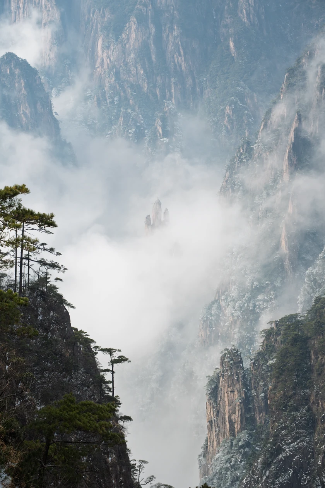
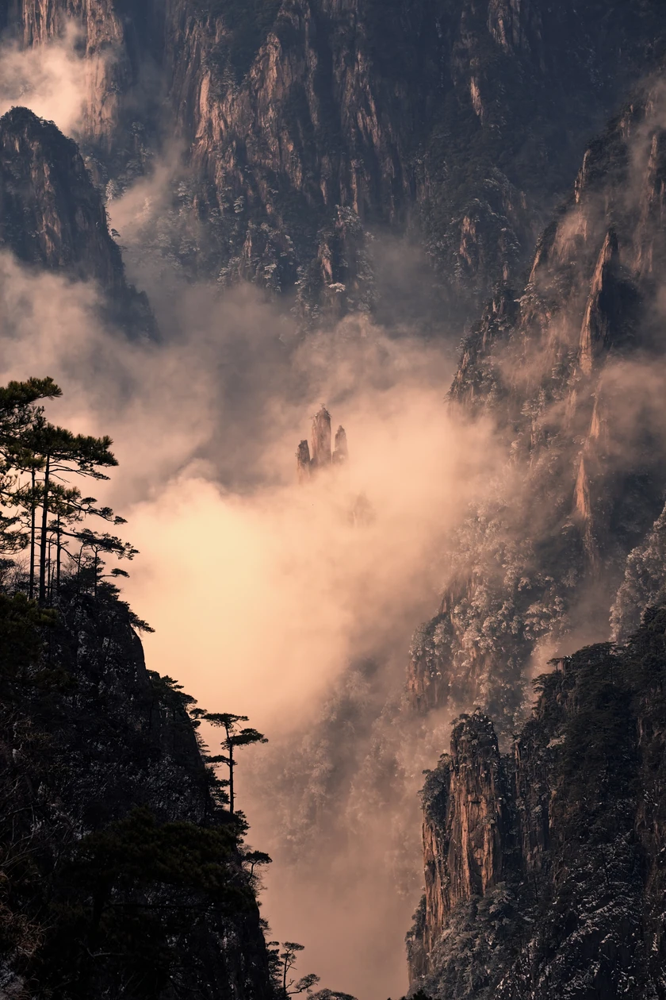
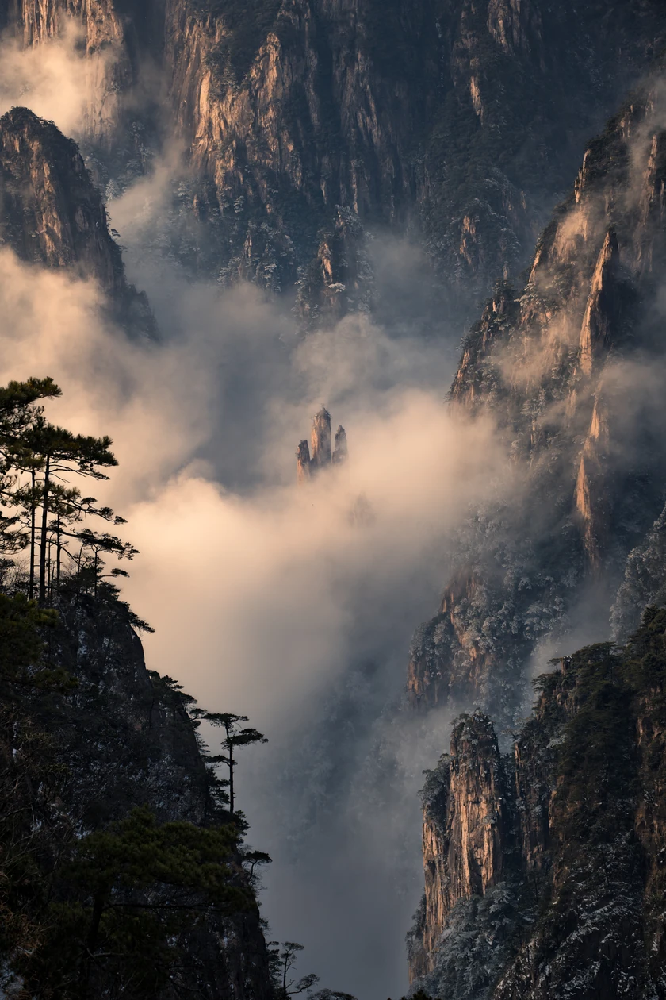

Style inspirationGenerated color study · Max Rive’s original ↗
Style inspirationGenerated color study · Max Rive’s original ↗ ChatGPT reference1024 × 1536 · Target grade
ChatGPT reference1024 × 1536 · Target grade Full-resolution result4672 × 7008 · Grade learned from the reference
Full-resolution result4672 × 7008 · Grade learned from the reference
Peaks in mist · Comparison with PixelCake
Look closer at the grade.
Pick a comparison, then zoom in on the central peak to examine the lit rock, blue-gray mist, and texture along the edges.
Both workflows start with the same style image. PixelCake matches it directly. In the GradeMirror workflow, ChatGPT first makes a same-scene draft.





In this example, the PixelCake result has an overall orange cast. Warm orange highlights and blue-gray shadows remain more distinct in the GradeMirror result.
Comparison setup and image credits
The same-reference comparison uses the same original photo and same-scene draft for both tools. The second comparison starts with the same style image. PixelCake uses that photo directly, and GradeMirror uses a same-scene draft generated by ChatGPT. It compares the two complete workflows.
The style inspiration comes from Max Rive’s Peru portfolio. The comparison uses the original work as its style reference. The snowy peaks shown on this site are a generated color illustration. The comparison is a visual assessment of one photograph. All three details show the same area at the same scale.
The selected images could not load. Try changing the selection again.